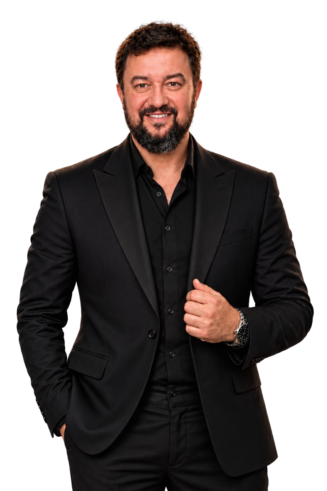

JORNALISMO
Jornalista e autor na Revista Timeline, com produção de artigos, entrevistas e análises sobre política e temas nacionais. Participação em programas de opinião e cobertura de acontecimentos relevantes.
VER ARTIGOS ↗
Jornalismo. Educação. Inovação. Pesquisa.
Por um país mais livre, justo e próspero.
Jornalista e autor na Revista Timeline, com produção de artigos, entrevistas e análises sobre política e temas nacionais. Participação em programas de opinião e cobertura de acontecimentos relevantes.
VER ARTIGOS ↗Coordenador do HUB RJ de Inovação, iniciativa voltada à conexão entre startups, universidades, empresas e instituições. Experiência na articulação de iniciativas de empreendedorismo e inovação no Estado do Rio de Janeiro.
SAIBA MAIS ↓Mestre pelo PROFNIT/UFRJ, com pesquisas e projetos em inovação e propriedade intelectual. Desenvolve estudos eleitorais com bases documentadas, incluindo o Observatório Eleitoral e análises das apurações presidenciais.
ACESSAR ESTUDOS ↗Professor da FAETEC desde 1999, com experiência em ensino, coordenação e direção de tecnologia. Ex-vice-presidente da FAETEC e ex-presidente da Fundação CECIERJ, com atuação em educação pública, tecnologia e formação profissional.
CONHEÇA A TRAJETÓRIA ↓Sou jornalista, professor e pesquisador. Minha trajetória começou na educação tecnológica, em 1999, na FAETEC, onde atuei em sala de aula e em funções de gestão, incluindo a direção de tecnologia e a vice-presidência. Também presidi a Fundação CECIERJ, ligada à educação científica e à formação de professores.
Minha formação reúne Ciência da Computação, pós-graduação em Gestão de Projetos pela PUC-Rio e mestrado no PROFNIT/UFRJ. Recebi ainda o título honorífico de Doutor Honoris Causa, distinto de um doutorado acadêmico.
Na inovação, coordeno o HUB RJ de Inovação e trabalho na aproximação entre conhecimento, empreendedorismo e oportunidades. No jornalismo, produzo análises, entrevistas e pesquisas para a Revista Timeline.
Rogerio Pires
Jornalista · Professor · Mestre · Doutor Honoris Causa
Uma frente importante da minha atuação é conectar pessoas, conhecimento e oportunidades no ecossistema fluminense de inovação. Como coordenador do HUB RJ de Inovação, participo da articulação de iniciativas voltadas a startups, empreendedorismo, universidades, empresas e poder público.
Minha experiência na educação tecnológica e na gestão pública orienta esse trabalho: aproximar a formação de talentos das necessidades reais de quem empreende e desenvolve soluções.
CONHEÇA MINHA ATUAÇÃO →Inovação, formação, empreendedorismo e articulação institucional no Rio de Janeiro.
Comparações entre pesquisas eleitorais e resultados oficiais, com metodologia e documentação.
CONHECER PROJETO ↗Estudo de séries temporais e comportamento das curvas de apuração, com limites metodológicos explicitados.
VER PROJETO ↗Artigos, análises e entrevistas sobre os acontecimentos políticos e sociais do Brasil.
ACESSAR REVISTA ↗Acompanhe artigos, pesquisas e novidades.